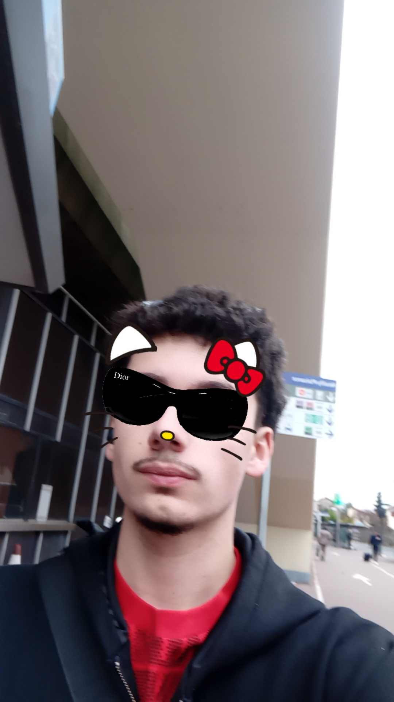

À Propos de Moi

Bonjour ! Je suis Oscar Baer, actuellement étudiant en 3ème année de BUT MMI (Métiers du Multimédia et de l'Internet). Je suis passionné par la création d'expériences numériques complètes et je cherche une alternance à partir de la rentrée de septembre 2026.
Mon objectif est de continuer mes études avec un Master dans les domaines de la communication visuelle, du web et de la création de contenu audiovisuel. Mon parcours m'a permis d'acquérir des compétences solides, me permettant d'allier technique, esthétique et stratégie.
Au-delà du code et du design, je m'intéresse également à l'architecture (Blender/Unity) et à l'écriture créative. Vous trouverez ci-dessous le détail de mes compétences.
Télécharger mon CVMes Compétences
Développement & Programmation
- HTML, CSS, JAVASCRIPT (ES6+)
- Angular, React, Node Js
- PHP, MySQL (Base de données)
- Java, WordPress
Design & Création Visuelle
- Adobe Photoshop, Illustrator, InDesign
- Figma, Inkscape, Krita (Design/Wireframing)
- UX / UI, Audit
- Blender, Unity (3D/Moteur de jeu)
Audiovisuel & Marketing
- Montage (Adobe Première Pro, Avid)
- Opération de caméra, Prise de son
- Méthodes de gestion de projet (Agile, Sprint)
- Marketing (Brief, Plan Média, S.W.O.T)